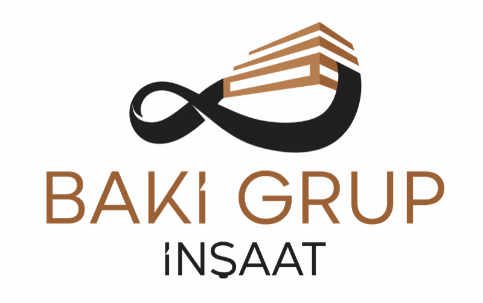

Web sitesi · tasarım taslakları
Üç yön, aynı cümle.
Üç taslak da aynı fikri anlatıyor: binayı başkası yükseltir, içinde yaşanan yüzeyi Baki Grup yapar. Fark, bunu nasıl gösterdiklerinde.
- 01
Kesit
Aç →Açık renk, mimari çizim havasında. Aşağı indikçe bir bölme duvar katman katman kuruluyor.
- 02
Yalama Işık
Aç →Koyu renk, otel havasında. Yüzeyin üzerinden geçen ışık, ustanın duvarı denetlediği anı anlatıyor.
- 03
Metraj
Aç →En sade ve en kurumsal olanı. Büyük sayılar, projeler tablo hâlinde; 1.500.000 m² karo karo doluyor.